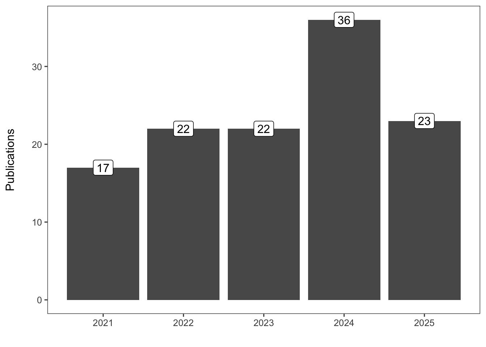
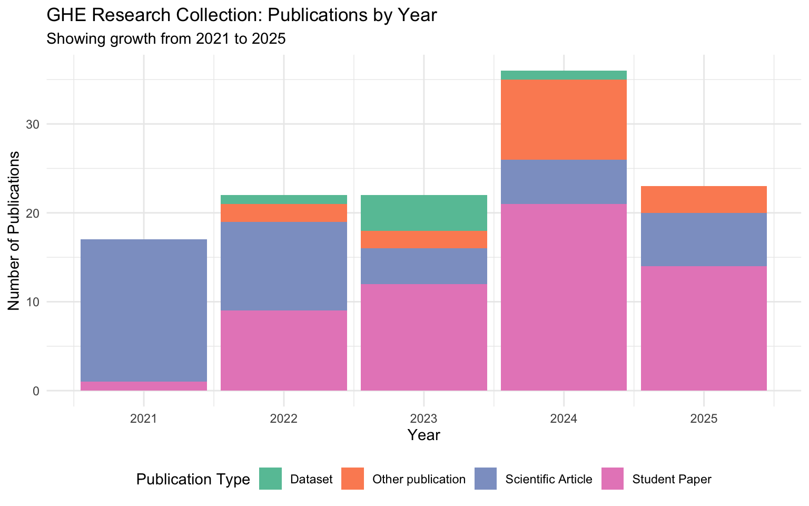
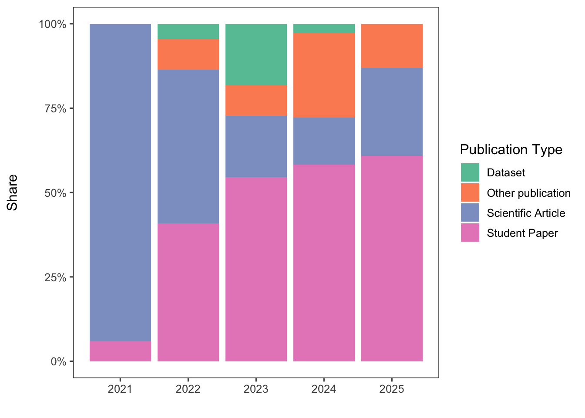
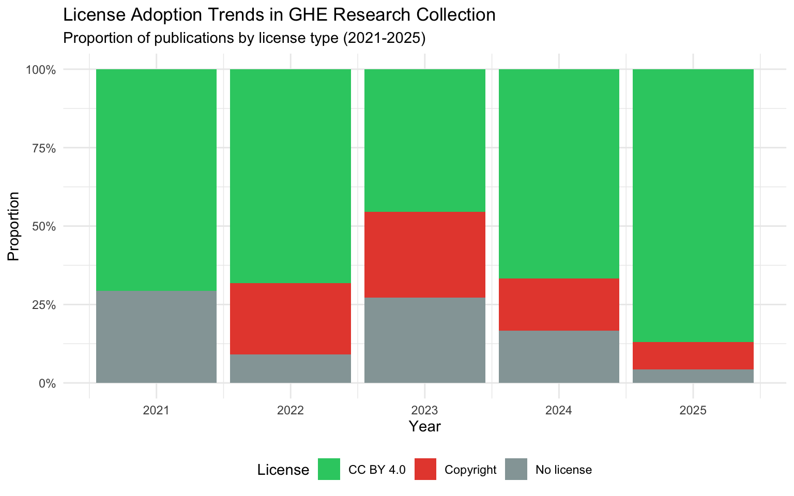
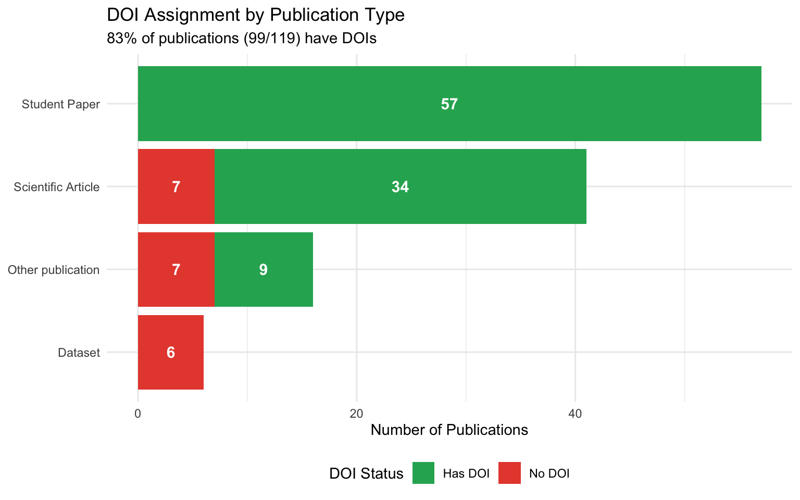
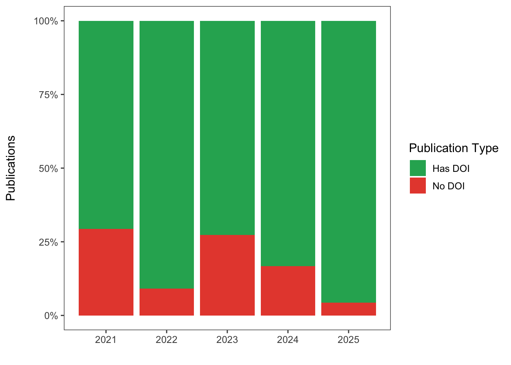
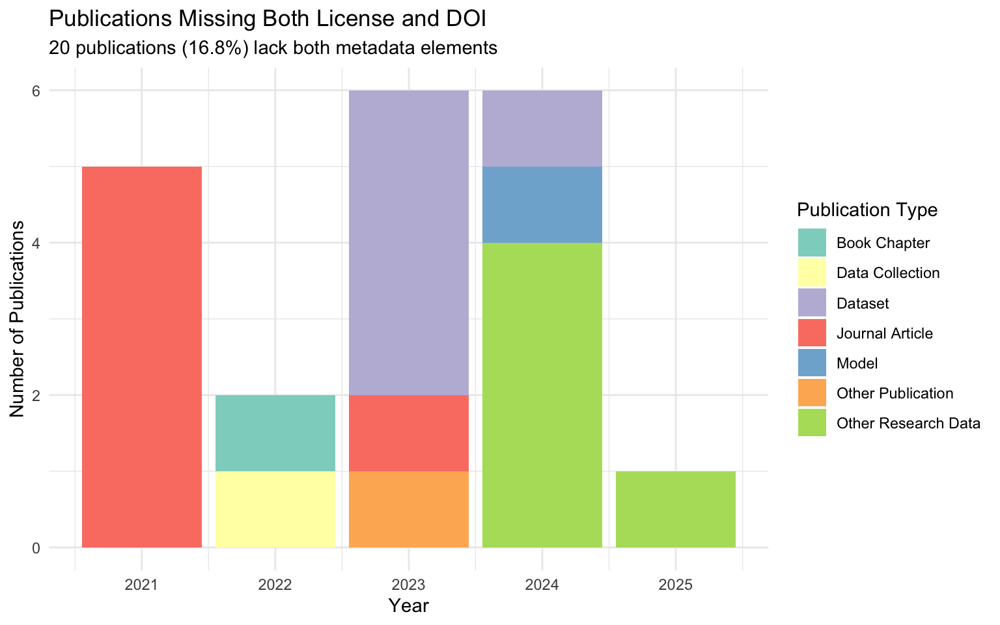
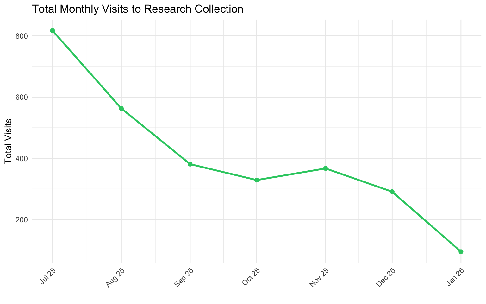
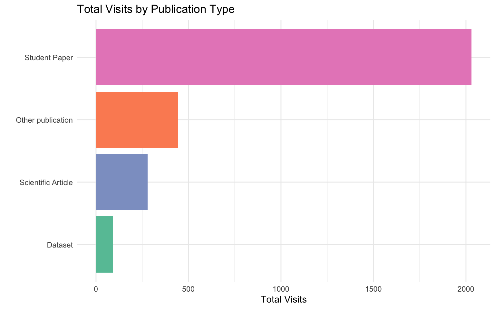

library(tidyverse)
library(kableExtra)
library(ggthemes)
# Read in the GHE research collection data
ghe_research_collection <- read_csv("raw-data/ghe-research-collection.csv")
monthly_visits <- read_csv("raw-data/monthly_visits.csv") |>
mutate(date = parse_date_time(month, orders = "my"))GHE Research Collection: Publication Patterns Analysis
Overview
The Research Collection is ETH Zurich’s repository for publications and research data. It’s where ETH Zurich faculty, staff and students can publish the full text of their work or openly share their research data (open access). Since the group was created in 2021, not only research staff of GHE but also students have published their work (theses, software, etc.) on the platform.
This report analyzes publication patterns in the GHE Research Collection, examining trends in publication types, open access licensing, DOI adoption, and temporal patterns across 119 publications from 2021 to 2025.
This README must be rendered with the following command in your terminal: quarto render analysis.qmd --to gfm --output README.md
Data Loading
Dataset Overview
paste0("Total publications: ", nrow(ghe_research_collection))[1] "Total publications: 120"ghe_research_collection |>
group_by(publication_type) |>
count() |>
arrange(desc(n)) |>
kable(format = "html")| publication_type | n |
|---|---|
| Journal Article | 39 |
| Master Thesis | 23 |
| Bachelor Thesis | 17 |
| Student Paper | 17 |
| Dataset | 5 |
| Other Research Data | 5 |
| Report | 5 |
| Other Publication | 2 |
| Book Chapter | 1 |
| Conference Poster | 1 |
| Data Collection | 1 |
| Model | 1 |
| Other Conference Item | 1 |
| Review Article | 1 |
| Working Paper | 1 |
Number of publications
ghe_research_collection |>
group_by(year) |>
count() |>
ggplot(aes(x = year, y = n, label = n)) +
geom_col() +
geom_label() +
labs(x = "",
y = "Publications\n") +
theme_few()
Publication Growth and Composition
ghe_research_collection |>
count(year, publication_type_group) |>
ggplot(aes(x = year, y = n, fill = publication_type_group)) +
geom_col() +
labs(
title = "GHE Research Collection: Publications by Year",
subtitle = "Showing growth from 2021 to 2025",
x = "Year",
y = "Number of Publications",
fill = "Publication Type"
) +
theme_minimal() +
scale_fill_brewer(palette = "Set2") +
theme(legend.position = "bottom")
Publication Types (relative numbers)
ghe_research_collection |>
group_by(year, publication_type_group) |>
count() |>
group_by(year) |>
mutate(rel_freq = n/sum(n)) |>
ggplot(aes(x = year, y = rel_freq, fill = publication_type_group)) +
geom_col(position = "stack") +
scale_y_continuous(labels = scales::label_percent()) +
labs(x = "",
y = "Share\n",
fill = "Publication Type") +
scale_fill_brewer(palette = "Set2") +
theme_few()
Publication Type Distribution
ghe_research_collection |>
count(publication_type_group, sort = TRUE) |>
rename(
`Publication Type Group` = publication_type_group,
`Count` = n
) |>
mutate(Percentage = round(100 * Count / sum(Count), 1)) |>
knitr::kable()| Publication Type Group | Count | Percentage |
|---|---|---|
| Student Paper | 57 | 47.5 |
| Scientific Article | 41 | 34.2 |
| Other publication | 16 | 13.3 |
| Dataset | 6 | 5.0 |
Student papers (including Bachelor and Master theses) represent 47.5% of the collection, followed by scientific articles at 34.2%.
Open Access Licensing Trends
ghe_research_collection |>
count(year, license_short_group) |>
ggplot(aes(x = year, y = n, fill = license_short_group)) +
geom_col(position = "fill") +
labs(
title = "License Adoption Trends in GHE Research Collection",
subtitle = "Proportion of publications by license type (2021-2025)",
x = "Year",
y = "Proportion",
fill = "License"
) +
scale_y_continuous(labels = scales::percent) +
theme_minimal() +
scale_fill_manual(
values = c(
"CC BY 4.0" = "#2ecc71",
"Copyright" = "#e74c3c",
"No license" = "#95a5a6",
"CC BY-NC 4.0" = "#f39c12",
"CC BY-NC-ND 4.0" = "#e67e22",
"CC BY-NC-SA 4.0" = "#d35400"
)
) +
theme(legend.position = "bottom")
License Distribution Over Time
ghe_research_collection |>
count(year, license_short_group) |>
pivot_wider(names_from = license_short_group, values_from = n, values_fill = 0) |>
mutate(
Total = rowSums(across(-year)),
`% CC BY 4.0` = round(100 * `CC BY 4.0` / Total, 1)
) |>
knitr::kable()| year | CC BY 4.0 | No license | Copyright | Total | % CC BY 4.0 |
|---|---|---|---|---|---|
| 2021 | 12 | 5 | 0 | 17 | 70.6 |
| 2022 | 15 | 2 | 5 | 22 | 68.2 |
| 2023 | 10 | 6 | 6 | 22 | 45.5 |
| 2024 | 24 | 6 | 6 | 36 | 66.7 |
| 2025 | 20 | 1 | 2 | 23 | 87.0 |
CC BY 4.0 adoption has increased from 70.6% in 2021 to 87% in 2025.
DOI Assignment Patterns
ghe_research_collection |>
count(publication_type_group, doi_dummy) |>
ggplot(aes(x = reorder(publication_type_group, n, sum), y = n, fill = doi_dummy)) +
geom_col(position = "stack") +
geom_text(
aes(label = n),
position = position_stack(vjust = 0.5),
color = "white",
fontface = "bold",
size = 4
) +
coord_flip() +
labs(
title = "DOI Assignment by Publication Type",
subtitle = "83% of publications (99/119) have DOIs",
x = NULL,
y = "Number of Publications",
fill = "DOI Status"
) +
theme_minimal() +
scale_fill_manual(values = c("Has DOI" = "#27ae60", "No DOI" = "#e74c3c")) +
theme(legend.position = "bottom")
DOI Adoption by Year
ghe_research_collection |>
group_by(year, doi_dummy) |>
count() |>
group_by(year) |>
mutate(rel_freq = n/sum(n)) |>
ggplot(aes(x = year, y = rel_freq, fill = doi_dummy)) +
geom_col(position = "stack") +
scale_y_continuous(labels = scales::label_percent()) +
labs(x = "",
y = "Publications\n",
fill = "Publication Type") +
scale_fill_manual(values = c("Has DOI" = "#27ae60", "No DOI" = "#e74c3c")) +
theme_few()
ghe_research_collection |>
count(year, doi_dummy) |>
pivot_wider(names_from = doi_dummy, values_from = n, values_fill = 0) |>
mutate(
Total = `Has DOI` + `No DOI`,
`% with DOI` = round(100 * `Has DOI` / Total, 1)
) |>
knitr::kable()| year | Has DOI | No DOI | Total | % with DOI |
|---|---|---|---|---|
| 2021 | 12 | 5 | 17 | 70.6 |
| 2022 | 20 | 2 | 22 | 90.9 |
| 2023 | 16 | 6 | 22 | 72.7 |
| 2024 | 30 | 6 | 36 | 83.3 |
| 2025 | 22 | 1 | 23 | 95.7 |
Key observations:
- Overall DOI adoption: 83.3%
- Strong improvement: from 70.6% in 2021 to 95.7% in 2025
- All student papers have DOIs (57/57), demonstrating excellent metadata practices
- Datasets have the lowest DOI adoption: all 6 datasets currently lack DOIs
Identifying Metadata Gaps
Publications Without Licenses
no_license <- ghe_research_collection |>
filter(license_short == "No license")
cat("Publications without license:", nrow(no_license), "out of", nrow(ghe_research_collection), "\n")Publications without license: 20 out of 120 Publications Without DOIs
no_doi <- ghe_research_collection |>
filter(doi_dummy == "No DOI")
cat("Publications without DOI:", nrow(no_doi), "out of", nrow(ghe_research_collection), "\n")Publications without DOI: 20 out of 120 The Complete Overlap
overlap_count <- sum(ghe_research_collection$license_short == "No license" &
ghe_research_collection$doi_dummy == "No DOI")
cat("Publications missing BOTH license AND DOI:", overlap_count, "\n")Publications missing BOTH license AND DOI: 20 cat("This represents 100% of publications without licenses\n")This represents 100% of publications without licensescat("and 100% of publications without DOIs.\n")and 100% of publications without DOIs.
Metadata Gap Alert
20 publications (16.8%) lack both license information and DOIs. This represents a systematic metadata gap that affects the same set of publications.
Visualizing the Metadata Gap
ghe_research_collection |>
filter(license_short == "No license" & doi_dummy == "No DOI") |>
count(publication_type, year) |>
ggplot(aes(x = year, y = n, fill = publication_type)) +
geom_col() +
labs(
title = "Publications Missing Both License and DOI",
subtitle = "20 publications (16.8%) lack both metadata elements",
x = "Year",
y = "Number of Publications",
fill = "Publication Type"
) +
theme_minimal() +
scale_fill_brewer(palette = "Set3") +
theme(legend.position = "right")
The perfect correlation between missing licenses and missing DOIs suggests these are not random omissions but rather a systematic gap in the metadata collection workflow. Student papers show exemplary metadata practices (100% DOI coverage), suggesting the workflow for datasets and some journal articles may need improvement.
Research Impact and Engagement
Beyond publication metadata, analyzing how research is discovered and accessed provides insights into impact. This section examines visitor patterns across the collection.
Top 10 Most Visited Publications
monthly_visits |>
group_by(title) |>
summarize(total_visits = sum(visits)) |>
arrange(desc(total_visits)) |>
slice_max(n = 10, order_by = total_visits) |>
knitr::kable()| title | total_visits |
|---|---|
| Land use in the Seychelles – Rethinking the Sustainability of Tourism | 126 |
| Construction of a Glass Crusher and Evaluation of Waste Valorization Pathways for Cape Maclear, Malawi | 108 |
| Plastic separation - A review | 100 |
| Development of a Low-Cost Incinerator in Cape Maclear, Malawi | 91 |
| Air quality monitoring from open waste and incinerator burning in Cape Maclear, Malawi | 89 |
| Development of Pediatric Intravenous Flow Rate Monitor for Humanitarian Settings | 86 |
| Urine-Diverting Dry Toilet Design, Manifacturing, and Performance Testing of Earth Concrete | 78 |
| Tipping aid for loading small trucks on waste collection tours | 75 |
| Development of a Remote Communications Infrastructure for an Off-Grid Energy System | 69 |
| Designing a small-scale screw press for blackwater dewatering | 66 |
Total Monthly Visits Over Time
monthly_visits |>
group_by(date) |>
summarize(total_visits = sum(visits)) |>
ggplot(aes(x = date, y = total_visits)) +
geom_line(linewidth = 1, color = "#2ecc71") +
geom_point(size = 2, color = "#2ecc71") +
scale_x_date(date_labels = "%b %y", date_breaks = "1 month") +
labs(
x = "",
y = "Total Visits",
title = "Total Monthly Visits to Research Collection"
) +
theme_minimal() +
theme(axis.text.x = element_text(angle = 45, hjust = 1))
Visits by Publication Type
monthly_visits |>
left_join(ghe_research_collection |> select(name, publication_type_group),
by = c("title" = "name")) |>
filter(!is.na(publication_type_group)) |>
group_by(publication_type_group) |>
summarize(total_visits = sum(visits)) |>
arrange(desc(total_visits)) |>
ggplot(aes(x = reorder(publication_type_group, total_visits), y = total_visits,
fill = publication_type_group)) +
geom_col(show.legend = FALSE) +
scale_fill_brewer(palette = "Set2") +
coord_flip() +
labs(
x = "",
y = "Total Visits",
title = "Total Visits by Publication Type"
) +
theme_minimal()
Key Findings
1. Publication Growth & Composition
- The collection has grown from 17 publications in 2021 to 36 in 2024
- Student work dominates (57 out of 120 = 47.5%), including Master theses, Bachelor theses, and student papers
- Journal articles are the single largest type (39 publications, 32.5%)
2. Open Access Adoption is Strong
- ~70-86% of publications use CC BY 4.0 (the most permissive Creative Commons license) across all years
- Positive trend: 2025 shows 87% CC BY 4.0 adoption vs. 70.6% in 2021
- “Copyright” and “No license” publications are decreasing proportionally over time
3. DOI Assignment Patterns
- Overall 83.3% have DOIs (100 out of 120)
- Strong improvement over time: from 70.6% in 2021 to 95.7% in 2025
- All student papers have DOIs, showing excellent metadata practices
- Datasets represent a gap: none of the 6 datasets have DOIs
4. Systematic Metadata Gap Identified
- 20 publications (16.8%) lack both license AND DOI - a 100% overlap
- These are primarily datasets (11/20, 55%) and journal articles (6/20, 30%)
- Zero student papers have this metadata gap, indicating different workflows
- This suggests a systematic issue in metadata collection for certain publication types
5. Diverse Publication Types
- 15 different publication types, but dominated by 4 main categories
- Good mix of research outputs: articles, theses, datasets, reports, and conference materials
6. Research Impact and Engagement
- Monthly visits show consistent engagement with the collection
- Top publications receive substantial visitor traffic, demonstrating research impact
- Student papers and scientific articles drive the majority of visits
- Open access publications (especially CC BY 4.0) benefit from greater visibility
Conclusion
The GHE Research Collection demonstrates strong commitment to open science principles, with high rates of open access licensing (CC BY 4.0) and DOI adoption that have improved significantly from 2021 to 2025. Student work forms the backbone of the collection, and the excellent metadata practices applied to these publications serve as a model for the entire collection.
However, a systematic metadata gap has been identified: 20 publications (16.8%) lack both licenses and DOIs, primarily affecting datasets and some journal articles. This 100% overlap suggests a workflow issue rather than random omissions. Addressing this gap—particularly for datasets—would significantly enhance the collection’s discoverability and compliance with FAIR data principles.
The collection’s visitor patterns show that research published with proper open access licensing and metadata attracts sustained engagement, underscoring the value of comprehensive metadata practices for research impact.